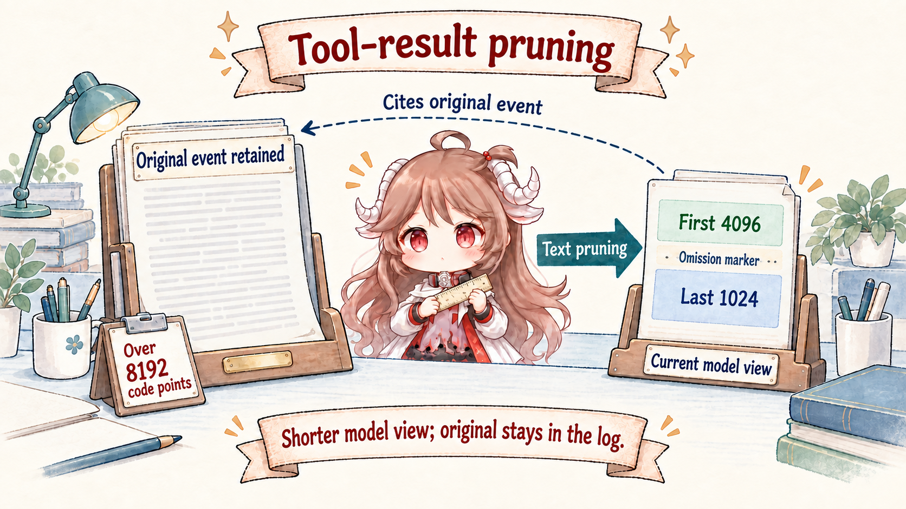
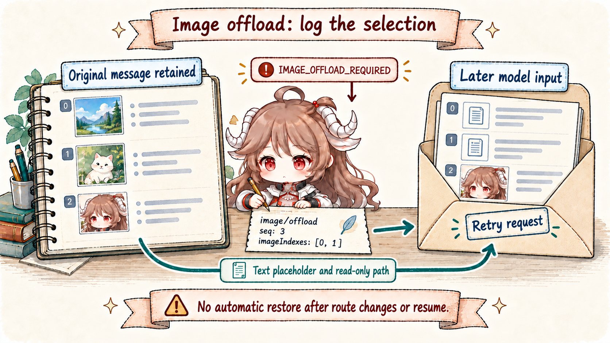
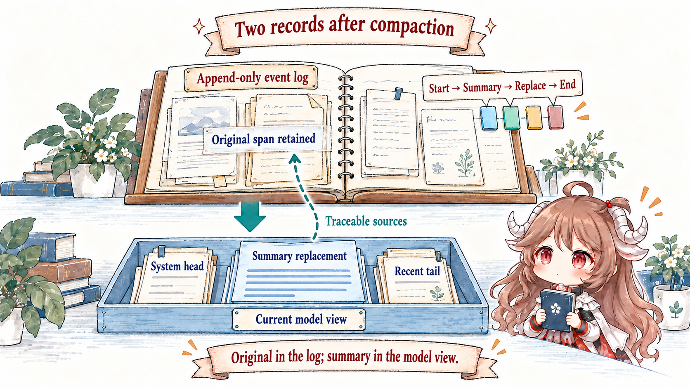
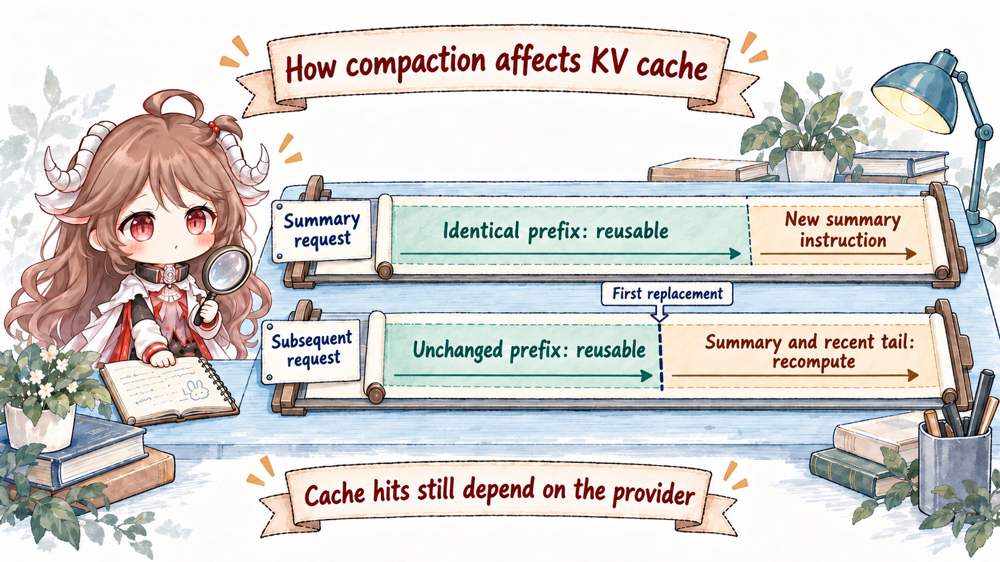

Compaction must price a concrete request, select a range with balanced tool calls and results, commit a summary replacement, and reconstruct system text, tools, provider config, and the session prefix after restoration.
DSH makes compaction an auditable state transition. ctx.tokenMeter prices the actual request envelope and current surface. A pruner may address pure bulk first. The compaction backend opens a bracket in the log, and one sourced user/message replacement commits each successful summary.
Reading contract.After this chapter, you should be able to explain what 0.8 and 0.16 control; why a below-pressure step must not opportunistically prune; how surface positions determine range membership; how the summary request reuses old KV cache while a future request invalidates it; and which reconstruction job belongs to raw log, current surface, and request/header.
Source scope.This chapter follows compaction-basic, image offload, and Session request reconstruction at 687f282. Budgets use the routed capacity and output cap; cache hits and billing depend on provider declarations and responses.
1. Price the complete request before deciding to compact
1.1 Compute pressure from window, output, and headroom
BasicCompactionEngine reads the latest canonical logged envelope and current surface at the same consumed-log revision. Measurement therefore covers system prompt, tool schemas, routing, assistant completion, tool results, and context or steering already admitted to the log.
Budget resolution reads the adapter’s window W and reserves output O from the latest effective request/header maxTokens, falling back to the adapter default and then 0. Additional B = headroomTokens defaults to 65,536. The trigger is floor(min(W × thresholdRatio, W − O − B)), with thresholdRatio 0.8 by default. Recent-history retention is floor((W − O) × retainRatio), with retainRatio 0.16 by default; explicit retainTokens overrides this ratio calculation. Exact provider/model policies may override these settings.
| Shape-level budget example | Value |
|---|---|
| Window W / output reservation O / headroom B | 1,000,000 / 256,000 / 65,536 |
| Pressure trigger | min(800,000, 678,464) = 678,464 |
| Recent history retained | floor(744,000 × 0.16) = 119,040 |
These values match the budget tests. The summary call’s own maxTokens defaults to resolved headroom; an explicit model cap takes precedence over an explicit global cap. Small-window deployments must lower headroom, and zero headroom requires a positive explicit summary cap. Missing capacity, output plus headroom exhausting the window, or retention reaching the trigger makes manual pressure checks throw. The automatic listener warns once per target and skips proactive compaction; provider-confirmed overflow recovery remains available.
1.2 Select only whole, balanced, replaceable surface units
Range selection starts at the oldest non-system-head nodes, reserves a recent tail, and uses the tool-pairing boundary helpers so no unanswered call crosses a cut. A system/message at surface position 0 never enters the compacted range; later system updates are compactable history. Turn boundaries do not protect old steps in one runaway turn. An open indivisible tail instead makes compaction decline until it closes.
A range selects members by surface position. After replacement, the new high-seq event occupies the shadowed range's old position. Later compaction reads that current membership; start <= seq <= end can select a different set.
2. Apply model-free pruning before paying for summarization
2.1 The tool-result pruner changes only the model surface

ctx.toolResultPruner acts when text blocks exceed 8192 Unicode code points by default, retaining 4096 at the head, a fixed marker, and 1024 at the tail. Non-text blocks keep relative order. Slicing never splits a UTF-16 surrogate pair, though it may split a grapheme cluster.
The new tool/result copies original data except content and replaces the old surface node. Its sourceEventSeqs: [originalSeq] cite the replaced result. Pruning reads that node's current message projection, so previously logged image-offload marks remain in the replacement content. Each replacement is immediately preceded by compaction/prune, recording the shadowed node and heuristic token price so the metering projection can subtract the old price. The original event remains in the append-only log. New text is strictly smaller and within threshold, so another scan does not trim it again.
2.2 Qualify pressure before invoking the pruner
A below-pressure step check never prunes. Once pressure or canonical overflow qualifies, the basic backend invokes the optional pruner and remeasures through the token meter. If the request is now safe, it skips summarization. Cheap deterministic shrink comes first without invalidating a reusable prefix merely because a result “looks large.”
Pruning limits count Unicode code points; compaction pressure counts tokens. Image nodes use route-declared image pricing while logged shadow prices keep the fixed heuristic: prune events record the old node’s heuristic price, then the backend remeasures the complete request. Surface compaction cannot fix a tool unit whose non-text or non-prunable remainder is still too large, or an envelope where system and tools alone approach the window.
2.3 Image-budget overflow has its own offload event

A tool result can contain only a few hundred characters but several costly images; text pruning cannot resolve that pressure. The image-offload plugin handles only IMAGE_OFFLOAD_REQUIRED carrying an offloadImages count. It walks the failed request in message order, selecting the oldest user/tool input images while skipping assistant output and already-offloaded occurrences. An image/offload event stores message seqs and image-occurrence indexes in the current content array.
Current tool results use first-class role: 'tool' messages, with text and images directly in content. Both pruning and offload read that message’s current projection. If the agent request is already cancelled, the offload listener delegates without appending an omission decision or requesting a retry.
// Shape-level example: select the first image of current message node 42
{ type: 'image/offload', data: { targets: [{ seq: 42, imageIndexes: [0] }] } }
// Later requests: attachment name and available read-only path replace the image
// Original message events and surface node identities stay unchangedThis path creates no replacement node. Message projection marks selected images, the adapter sends text placeholders, and token measurement follows the same selections. The agent logs a fresh request/header and retries without spending provider retry budget or emitting llm/retry. A larger route, resume, or later compaction never automatically restores an old occurrence; reading the attachment again creates a new one. The cost is an initial adapter rejection, and cache reuse ends at the first changed message.
3. A successful summary commits one region replacement
3.1 A five-step bracket ties source, replacement, and lock together

compaction/startappends synchronously and acquires the log-recorded lock.- The backend creates a summary and revalidates that the selected span has not drifted.
compaction/summaryrecords raw summary, range, shadowed seqs, token measurement, summary-call target, and usage; it is log-only.- One
user/messagecarries checkpoint content,compactCheckpointSource(compactionId), andsurfaceOp: replace. The source kind iscompact-checkpoint; itssourceEventSeqscite start, summary, and every shadowed seq in that order. This is the summary commit's only surface replacement. compaction/endreleases the lock last.
The next model request retains the system head and sees one <compacted-summary> checkpoint followed by the recent tail. Human transcript and exact audit still read old append-origin events. The checkpoint replaces that span; compaction/* stays log-only.
3.2 Convergence and changed spans fail explicitly
The basic backend rejects a summary that is not smaller than its source. After a successful reduction, continued pressure may trigger extra checkpoint compactions under compactionRetries, throwing when exhausted. The automatic pre-step listener catches operational failures, warns, and continues the turn. Canonical overflow recovery permits a retry only after replacement generation advances; pruning that lands before a later summary failure can satisfy that requirement. Without reduction progress, the original provider error remains authoritative.
Failed summary requests also reach synchronous compaction/summary-error. Image offload selects only occurrences inside that summary region; once recorded, the backend re-derives and re-prices the input before retrying inside the same bracket. Those omissions remain if later work fails or is cancelled. These durable omission selections change later model input. Unrelated span drift rejects a stale summary; a failed bracket close still leaves an orphan start blocking the current lifecycle.
4. Summarization and future requests move cache in opposite directions
4.1 The summarizer replays recorded history

The default summarizer calls ctx.llm.stream() with the derived system head, shadowed-region messages, the header’s active tools, and Session.toolHistory(), then appends the summary instruction. An empty system head contributes no message while remaining outside the compacted span. That instruction is a frozen RequestUserInput without durable id/source; replayed history and the resulting checkpoint retain durable message identities. Before dispatch, the LLM layer projects tool definitions and developer updates for the route. Cache reuse depends on an identical route and projected prefix.
Tool-update projection follows model capability: in-history retains removed definitions and updates; addition-only omits removed definitions and removal messages; unsupported routes receive current active tools. Missing toolHistory or a request span omitting recorded updates also falls back to active definitions. A different summary route, a non-head region, or image offload can change the reusable prefix.
The call sets purpose: 'compaction' without changing the model-visible body. Only returned text enters the checkpoint. Reasoning and tool calls are excluded, while image output fails with UNSUPPORTED_CONTENT.
4.2 Replacement invalidates future requests from the first changed token
A future conversation request may reuse system, tools, and unchanged history before the replacement. From the first shadowed token onward, the old cache no longer matches, so checkpoint and recent tail are recomputed. KV cache matches request bytes; retained original events continue to serve audit.
5. Reconstruct from messages, headers, and tool history
5.1 Reconstruct messages, config, and tool history
deriveMessages() produces the current system, developer, user, assistant, and tool sequence. System text comes from system/message; surface position 0 stays the stable head and later system updates may enter history. request/header stores config, adapterDefaults, and active tools. developer/message records tool changes: additions reference their complete historical definitions through headerSeq, while removals name the tool.
foldRequestHeader() selects the last canonical snapshot in a log prefix. Session rejects empty optional tools arrays and adapterDefaults objects; tool schemas compare in order. Reasons include initial, resume, change, and series. Surface replacement or an explicit message series records a boundary, with startsSeries when the header also changes. toolHistory() incrementally folds historical headers and developer messages, resolving each addition against its historical headerSeq. Request reconstruction combines message projections, the effective header, and tool history before route-specific projection. Restoration also registers used message-projection definitions, such as image/offload, so Session can reconstruct their content changes.
5.2 end-seed distinguishes a live lock from old crash evidence
The latest unmatched compaction/start after the newest session/end-seed belongs to this lifecycle and returns busy. A start before that boundary is stale evidence from a prior process and does not block. Restoration makes this decision from the logged lock and lifecycle boundary.
6. Engineering consequences of the protocol
- Keep original events.Summary replacement changes the model-visible span while audit, recovery, and human history continue reading the original records.
- Measure the envelope before history.No number of summaries fixes a system prompt or schema set that already fills the window.
- Prefer deterministic pruning first.It may avoid a model call, but the automatic pressure path must first qualify pressure and remeasure after pruning.
- Record replacement sources.A checkpoint without compactionId and sourceEventSeqs cannot prove what it displaced.
- Judge cache by request bytes.Cache reuse follows the unchanged request prefix.
- Summaries are lossy.Summaries may omit semantic details; critical workflows should rely on structured state and external facts. Image offload is also a durable lossy choice; a larger route does not restore old occurrences.
Part VI follows spawn, fork, workflows, and the Ralph loop through child-session catalogs, tool scope, concurrency, and delegation-depth controls.
Source references
- compaction-basic README and region transaction: pressure, retention, summary replay, transaction, and overflow recovery.
- compaction seam README: service boundary, tool pairing, surface contract, and durable bracket.
- tool-result-pruner README: code-point budgets, content-only replacement, and limitations.
- request-header.ts and the Session README: envelope reconstruction, surface replacement, and KV-cache semantics.
- image-offload recovery / offloadOldestImages: image selection, durable projection, and both retry entry points.